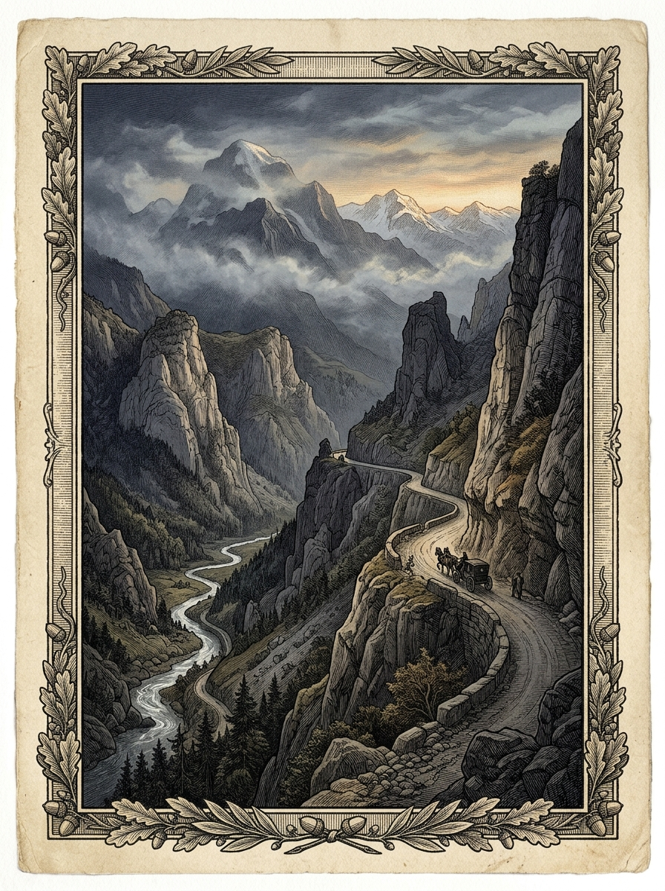

Пятигорск, Кавказ и отец Федор на скале
Билеты в «Провал», лезгинка Воробьянинова и трагедия в ялтинскую ночь

Дальнейший путь лежал вслед за театром на Кавказ. В Пятигорске, оставшись без копейки, Остап организовал продажу входных билетов к знаменитому природному ущелью «Провал» — с благородной целью, «чтобы не слишком проваливался» (причем членам профсоюза и детям делалась скидка). А затем на Военно-Грузинской дороге, когда кончились деньги, Киса в отчаянии плясал лезгинку перед туристами, выпрашивая копейки позорным криком «Подайте бывшему депутату Государственной думы!».
Здесь же, на отвесной скале Дарьяльского ущелья, бесславно завершилась одиссея отца Федора: потеряв рассудок от напрасной рубки чужих стульев в Батуми, батюшка утащил у туристов кольцо любительской колбасы, влез на неприступную вершину и три дня просидел там среди облаков, пока его не сняли пожарные.
В Батуми, Тифлисе и Ялте в руки концессионеров попали еще три стула из театра «Колумб» — но все они оказались пусты, а последний ялтинский стул развалился прямо во время знаменитого крымского землетрясения 1927 года. Казалось, в мире не осталось ни одного стула — кроме последнего, двенадцатого, о котором неожиданно сообщила московская газета.